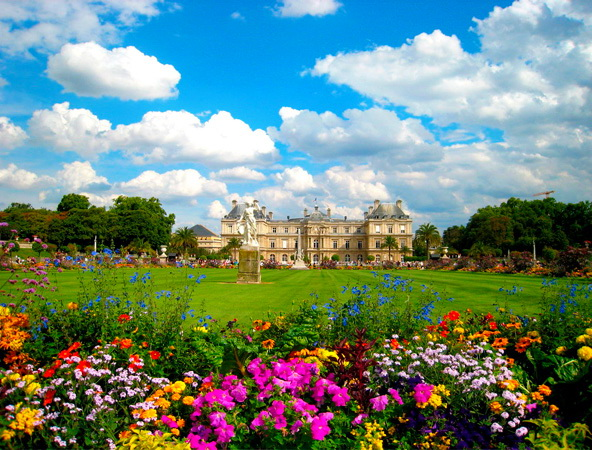
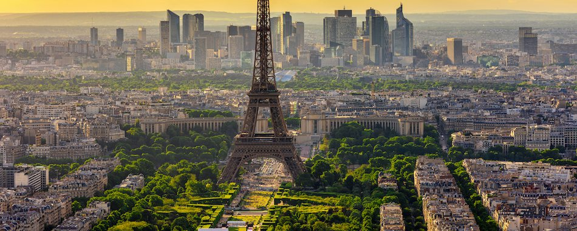

Столиця Paris
Париж
Пари́ж (фр. Paris) — столиця Франції, адміністративний центр регіону Іль-де-Франс. Окремий департамент Франції.
Розташований на річці Сена.
Штаб-квартири низки міжнародних організацій: ЮНЕСКО, Організація економічного співробітництва та розвитку, Міжнародна торгова палата та інші.
Центр світової торгівлі (автомобілі, літаки, канцелярські товари й туристичне спорядження); г оловний національний промисловий округ (засоби транспорту, енергетичне обладнання, електроніка, одяг, косметика), фінансово-банківська столиця; великий транспортний вузол (2 міжнародні аеропорти).
Вищі навчальні заклади (13 університетів), Французький інститут, Французька академія. Славетні наукові інститути: Інститут Пастера, радіологічних досліджень.
Культурний (97 музеїв, 300 мистецьких галерей, близько 100 театрів) і туристичний центр світової ваги.
Топонім Париж походить від назви кельтського племені паризіїв (Parisii). Сучасна назва є похідною від латинської назви міста, що спершу називалося Лютеція Паризіорум (лат. Lutetia Parisiorum) та Civitas Parisiorum, тобто місто паризіїв. Етимологія назви цього племені достеменно не встановлена. Ще декілька французьких топонімів мають спільне походження з назвою Париж: Вільпаризі, Кормей-ан-Паризі, Фонтене-ан-Паризі. З римських часів дійшли також згадки про паризіїв, що мешкали в Англії, в сучасному східному Йоркширі.
